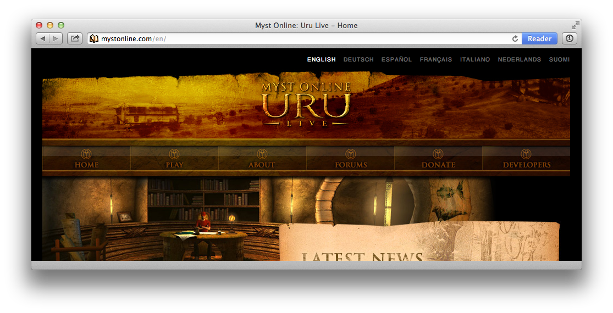

nanoc is a static site generator, fit for building anything from a small personal blog to a large corporate web site.
nanoc is a static site generator, fit for building anything from a small personal blog to a large corporate web site.

The current release is 3.6.7, released on December 9th, 2013. Check out the release notes for details.
Install nanoc A simple gem install nanoc will get you going, but we’ve provided detailed instructions for those who are unfamiliar with Ruby.
Take the tutorial This ten-minute tutorial will show you how nanoc works, and teach you the basics — enough to get a small web site up and running.
Learn more nanoc comes with vast amounts of documentation, covering everything from basic usage to extending nanoc with custom filters, data sources and more.
nanoc needs your support! nanoc is, and always will be, provided free of charge. Development is voluntary and happens entirely in free time. If you use nanoc and like it, please consider showing your token of support by making a donation.